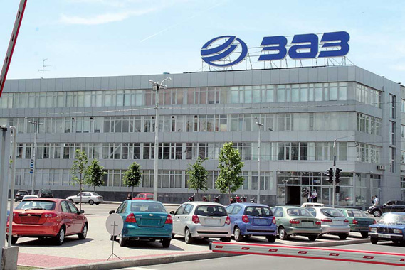
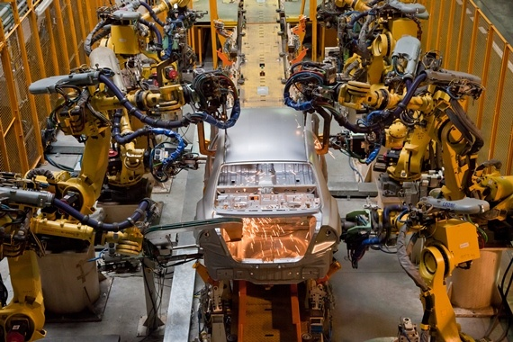
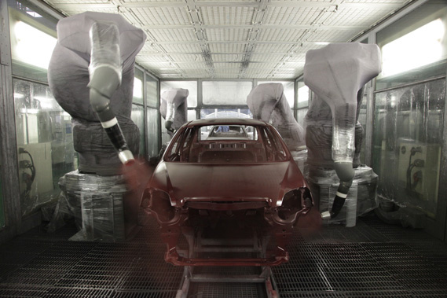
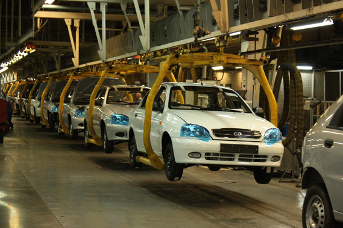
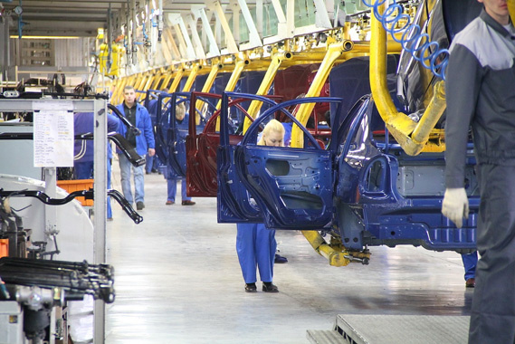
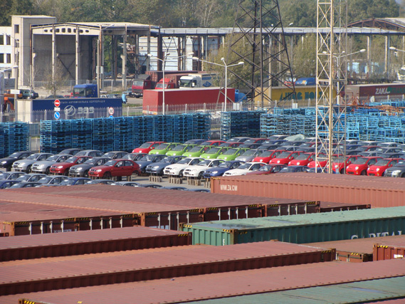

	<div class="lines">
			
		<div class="block_main">
			<h2>Производство</h2>
						
			<p><strong>ПАО «ЗАПОРОЖСКИЙ АВТОМОБИЛЬНЫЙ ЗАВОД»</strong></p>
			<p> ПАО «Запорожский автомобилестроительный завод (ПАО «ЗАЗ») - единственное в Украине предприятие, обладающее полным циклом производства легковых автомобилей, который включает штамповку, сварку, окраску, оборудование кузова и сборку автомобиля. На предприятии создано и постоянно совершенствуется качественно новое современное высокотехнологичное производство. Приоритетами ПАО «ЗАЗ» является постоянное стремление совершенствовать собственную продукцию, работа над внедрением новых идей и расширение модельного ряда автомобилей.</p>
			<p></p>
			<p>Высокий уровень технического обеспечения производства стал основой для плодотворного сотрудничества ПАО «ЗАЗ» с лидерами мирового автомобилестроения: Adam Opel, Daimler AG, GM DAT, ВАЗ, ТАТА, Сhery, КІА. Производство ориентировано в основном на потребителей автомобилей класса С (самого быстрорастущего сегмента рынка).</p>
			<p>ПАО «ЗАЗ» входит в группу компаний «УкрАВТО». Украинская Автомобильная Корпорация - лидер автомобильного рынка Украины; крупнейший производитель и дистрибьютор автомобилей, поставщик высококачественных услуг автосервиса.</p>
			<p>Динамика развития автозавода, приоритетами которой являются постоянное стремление совершенствовать собственную продукцию, работа над претворением новых идей в жизнь и расширение модельного ряда автомобилей, говорит о прогрессе создания отечественного автомобиля.</p>
			<p><strong>СИСТЕМА И ПОЛИТИКА МЕНЕДЖМЕНТА КАЧЕСТВА</strong></p>
			<p>Политика качества предприятия направлена на удовлетворение требований и ожиданий потребителей, совершенствование системы менеджмента качества. Производство соответствует требованиям международного стандарта ISO 9001:2000 и требованиям, выдвинутым партнерами ПАО «ЗАЗ»:</p>
			<ul>
			<li>обеспечивает выпуск высококачественной продукции и постоянное ее совершенствование;</li>
			<li>увеличивает степень удовлетворенности потребителей;</li>
			<li>определяет функции, полномочия и ответственность всего персонала, улучшает взаимодействие и взаимопонимание персонала;</li>
			<li>повышает результативность принимаемых решений;</li>
			<li>постоянно совершенствует процессы проектирования, производства, контроля и управления;</li>
			<li>повышает результативность функционирования предприятия в целом за счет приоритета методов предотвращения над методами устранения недостатков;</li>
			<li>увеличивает конкурентоспособность предприятия.</li>
			</ul>
			<p><strong>СВАРОЧНОЕ ПРОИЗВОДСТВО</strong></p>
			<p></p>
			<p>Автоматизация производства, практически полностью исключившая людской ресурс, особенно на этапе сварки кузова, улучшила скорость и качество производимых операций. Сварка кузовов ведется на линиях, которые оснащены уникальным, не имеющим аналогов в Украине, оборудованием. Операции производятся робототехнологическими комплексами. Максимальная механизация и автоматизация сварочного производства позволяет при небольших трудозатратах не только обеспечивать качество согласно самым жестким требованиям, но и контролировать его современными средствами диагностики.</p>
			<p>В состав сварочного производства входят гибкие автоматические линии «FANUC», «СОМАU», «КUKA», системы управления «Texas-500», «Alen-Bredley», «Simatik-110».</p>
			<p>Уровень качества сваренных кузовов определяется в лаборатории геометрии кузова с применением современного оборудования, отвечающего мировым стандартам. Координатно-измерительная машина PRO Compact, установленная в лаборатории, - многопрофильная, выполняет измерительные функции, сканирует поверхности, и с помощью программного обеспечения преобразовывает их в поверхности трехмерного изображения. Качество сварных соединений контролируется разрушающим и неразрушающим методом. Качество лицевой поверхности и соответствие зазоров навесных узлов контролируется на 100% изготавливаемых кузовов.</p>
			<p>Производительность составляет 22 узла в час.</p>
			<p><strong>ОКРАСОЧНОЕ ПРОИЗВОДСТВО</strong></p>
			<p>Процесс окраски имеет две составляющие: окраска кузова и окраска пластмассовых деталей.<br>До подачи деталей в камеры окраски производится обезжиривание, промывка, обдув и сушка в агрегате подготовки поверхности. После газопламенной обработки и обдува ионизированным воздухом детали поступают в камеры грунтования и окраски. Все процессы производятся с использованием роботов.</p>
			<p>Подготовка поверхности кузова на стадии обезжиривания и фосфатирования выполняется методом погружения в катафорезную ванну и разбрызгивания с применением состава фосфатирования и катодного электрофореза. Использование окрасочных материалов производства фирм BASF и KCC и современная технология окраски предоставляют гарантию против сквозной коррозии кузова на 5 лет.</p>
			<p></p>
			<p>За этапом нанесения герметиков следует трицикл окраски. Головка распылителя каждого робота «SAMES» вращается со скоростью 30 тысяч оборотов в минуту, окраска одного кузова занимает 1 минуту 25 секунд.</p>
			<p>На линиях предусмотрена возможность использования эмалей типа «пастель» и «металлик». В цехе окраски установлены девять современных роботов, пять из них предназначены для нанесения краски, четыре - лака. Возможности цеха окраски - конвейер со скоростью 3,75 м/мин, где кузова окрашиваются в 12 цветов: 8 - металлик, 4- пастель.</p>
			<p>Новое роботизированное оборудование легко поддается перепрограммированию, выполняя окраску быстро и качественно. В производстве действуют две автоматические линии общей длиной грузового конвейера 4 100 м.</p>
			<p>Окрасочные конвейеры обеспечивают мощность 32 кузова в час.</p>
			<p><strong>МОТОРНОЕ ПРОИЗВОДСТВО</strong></p>
			<p>Мелитопольский моторный завод является хозрасчетным предприятием ПАО «ЗАЗ» и ведет свою историю с 1908 г., когда И. Заферман основал завод по производству нефтяных двигателей.</p>
			<p>История предприятия неразрывно связана со специализацией на выпуске силовых агрегатов и постоянным развитием. Именно в Мелитополе были произведены первые двигатели к легендарному автомобилю "Запорожец". Автомобили Запорожского автозавода «Таврия», «Славута» и «Sеns» также оснащаются мелитопольскими двигателями.</p>
			<p>Мелитопольский моторный стал первым заводом в Украине, который разработал конструкцию двигателя с системой развернутого впрыска топлива и электронной системой управления двигателем (МеМЗ-307 мощностью 70 л.с.).</p>
			<p>В 2004 году заводу вручен Сертификат соответствия системы менеджмента качества Международному стандарту ISO 9001:2000, выданный транснациональным Международным техническим обществом БЮРО ВЕРИТАС.</p>
			<p>Несмотря на то, что основным заказчиком Мелитопольского завода остается Запорожский автозавод, часть продукции (запасные части) отправляются и на экспорт. Сегодня на предприятии работают более трех тысяч человек. Его работу обеспечивают 256 поставщиков (в Украине - 203, в России - 45, дальнее зарубежье - 8). Кроме производства двигателей МеМЗ выпускает новые виды продукции: полуприцеп-автовоз, эвакуатор, грузовая платформа, автофургон на базе ТАТА.</p>
			<p>Мелитопольский моторный завод производит силовые агрегаты, отвечающие стандарту Евро - 2: двигатели объемом до 1,4 л и трансмиссии.<br><br></p>
			<p><strong>СБОРОЧНОЕ ПРОИЗВОДСТВО</strong></p>
			<p>В производстве используется принцип поточных линий с использованием системы подвесных и напольных тротуарных конвейеров. Сборка, например, &nbsp;автомобилей «Ланос» производится одновременно темпом 32 автомобиля в час. Каждые две минуты в течение 8 часов здесь сходит с конвейера готовый автомобиль, то есть 240 авто за смену.</p>
			<p></p>
			<p>Новая конвейерная линия и оборудование, применяемое для сборки, являются универсальными, что позволяет легко адаптировать цех под сборку новых моделей автомобилей.</p>
			<p></p>
			<p>Запорожский автозавод производит методом полномасштабного производства 5 моделей легковых автомобилей под брендом ЗАЗ. Часть комплектующих - силовые агрегаты, арматура, сиденья, пластмассовые изделия - производятся на предприятии. Остальное обеспечивают предприятия-поставщики, более 80% которых локализовано в Украине.</p>
			<p><strong>ИСПЫТАНИЯ<br></strong></p>
			<p>Параметры автомобиля проверяются на установленных в сборочном цехе стендах обкатки, испытаний тормозов, регулировки углов установки управляемых колес и регулировки света фар.</p>
			<p>После стендовых испытаний автомобиль отправляется на дорожные испытания. Трек состоит из разных типов покрытий - "Лежачий полицейский", пластин для проверки ассиметричных нагрузок, канатов для проверки симметричных нагрузок, различных видов дорожного покрытия. Эксперты-испытатели проверяют автомобиль на соответствие требованиям по шуму, вибрации и жесткости, проводят дополнительный визуальный осмотр всех узлов и агрегатов тестируемой машины на эстакаде для подъема/спуска.Каждый автомобиль проходит окончательную обработку, которая включает следующие этапы:</p>
			<ul>
			<li>мойка после дорожной обкатки;</li>
			<li>инспекционный контроль на герметичность;</li>
			<li>устранение дефектов, выявленных после дорожной обкатки;</li>
			<li>контроль лицевых поверхностей;</li>
			<li>установка дополнительных опций.</li>
			</ul>
			<p><strong>ЛОГИСТИКА</strong></p>
			<p><strong><br></strong></p>
			<p>После проведенных испытаний и окончательной обработки сформированная партия автомобилей перемещается на склад готовой продукции, в отдел логистики автомобилей. Модернизированная система логистики на ЗАЗе постоянно развивается, обеспечивая оперативность, эффективность и качество комплекса работ, связанных как со своевременными доставками комплектующих изделий на заводские конвейеры, так и с оперативными доставками готового авто в сеть продажи под заказ его будущего владельца. Центр логистики (площадь 12 тыс. кв.м.), расположенный на территории завода, позволяет в непрерывном режиме получать сотни тысяч грузов, необходимых для производства, эффективно их обрабатывать и оперативно доставлять к месту назначения на производство. Сегодня в систему логистики также включены две секции для накопления и отгрузки готовой продукции общей площадью 51 289 кв.м., где могут находиться свыше 1300 новых автомобилей, которые ежедневно готовы к отправлению в разные уголки Украины.</p>
			<p>ПАО «ЗАЗ» активно реализовывает экспортную политику, закрепляя достигнутые позиции на экспортных рынках и развивая новые направления. Предприятие осуществляет экспорт автомобилей, машинокомплектов и комплектующих в Россию, Казахстан, Азербайджан, Грузию, Армению, Беларусь, Сирию, Иорданию, Ирак, Египет.</p>
		</div>
				
	</div><!-- lines_in -->
	